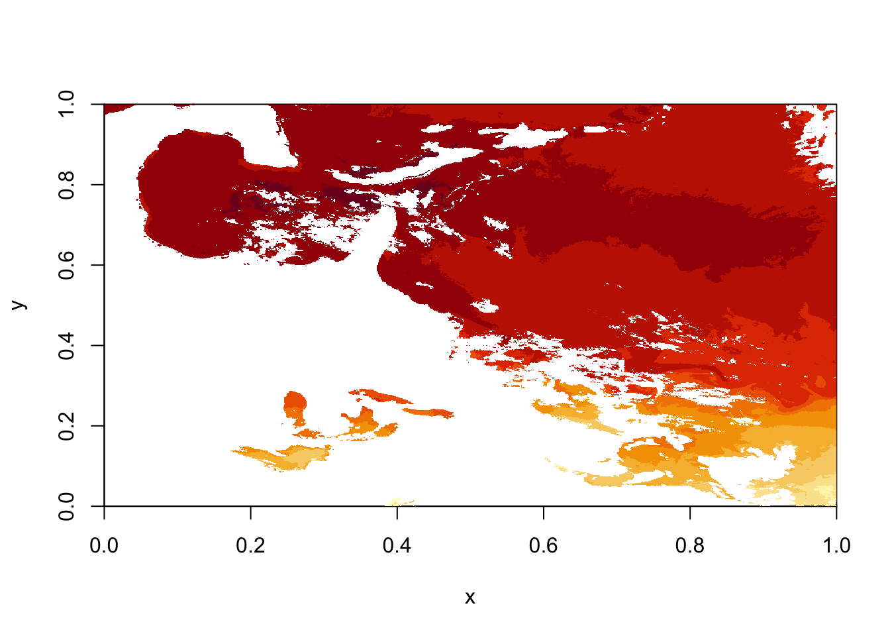
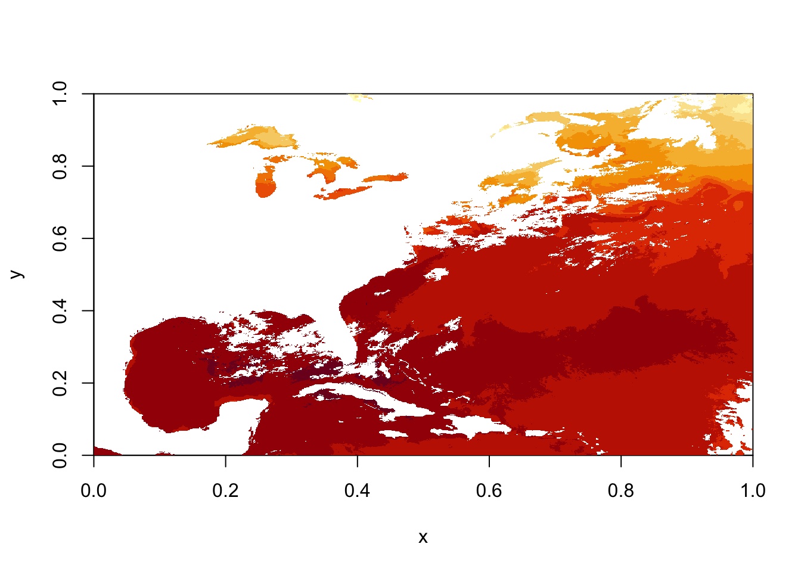
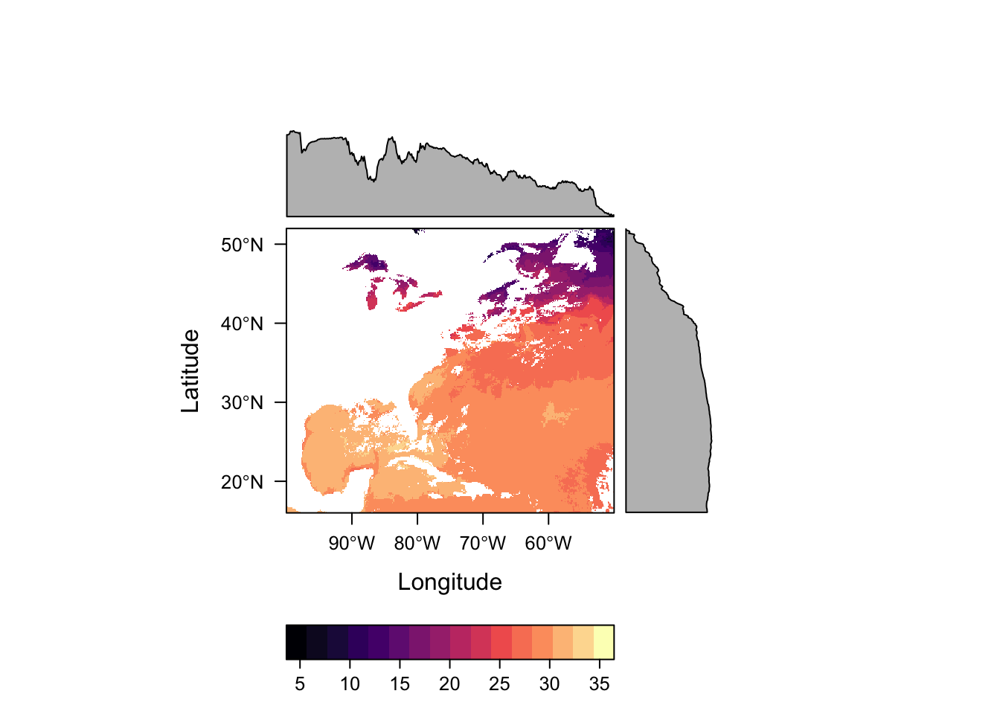
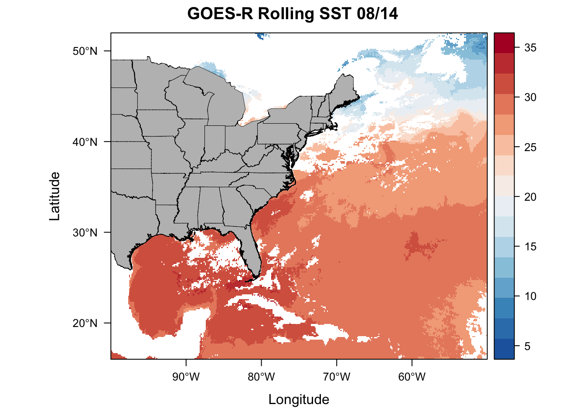
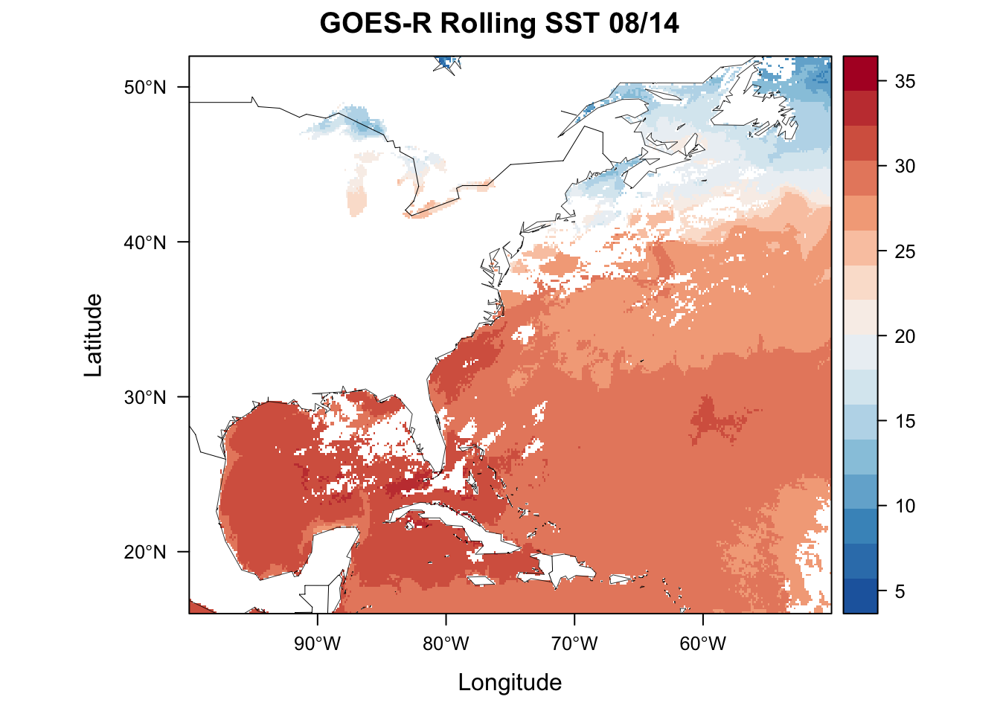
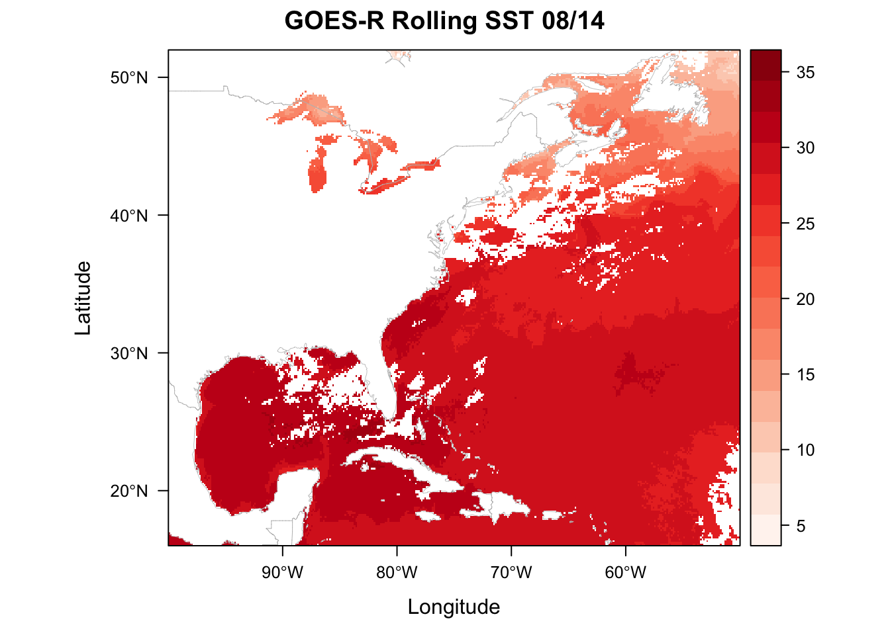
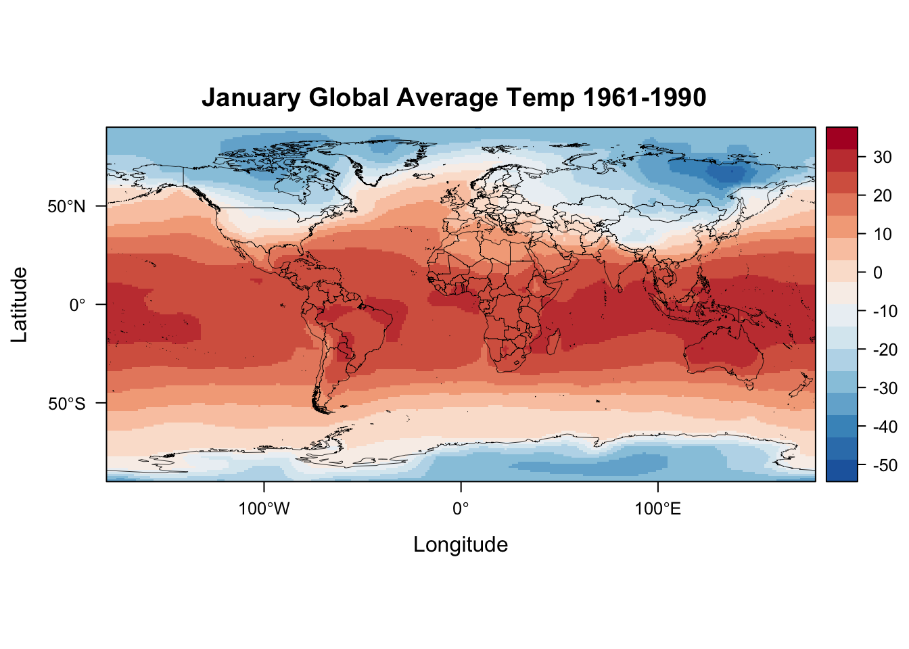
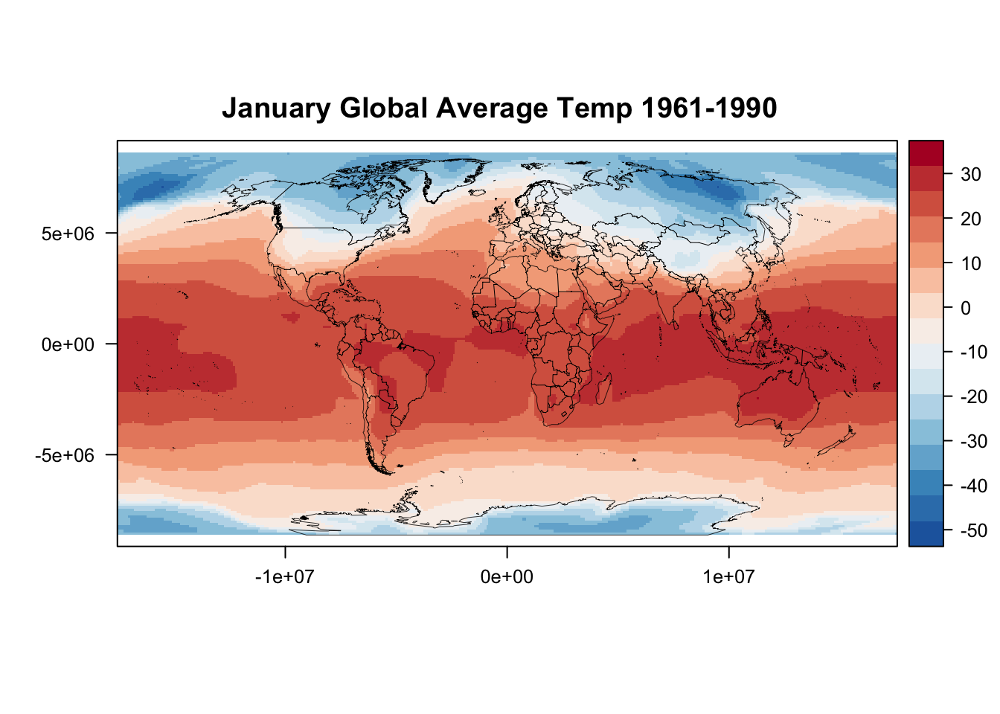

5 Rasters with Oceanography
5.1 Plot GOES-R Rolling 1 day data
library(maptools) # also loads sp package
library(sp)
library(ncdf4)
library(raster)
library(rasterVis)
library(RColorBrewer)
ncFile <- nc_open("/Users/james/Documents/Github/geog473-673/datasets/GOES_R_ROLLING_1DAY_20190814.nc")
sstGoes <- ncvar_get(ncFile, varid = "sst")
sstRast <- raster(sstGoes)
# plot using quick 'image' function from raster
image(sstRast)
# netcdf stores data backwards, so to convert it to raster we need to transpose it
sstRast <- t(sstRast)
# plot using quick 'image' function from raster
image(sstRast)
# now we see that the data is just upside down, so we use the flip() function
sstRast <- flip(sstRast, 2)
# plot using quick 'image' function from raster
image(sstRast)
## class : RasterLayer
## dimensions : 1989, 2778, 5525442 (nrow, ncol, ncell)
## resolution : 0.0003599712, 0.0005027652 (x, y)
## extent : 0, 1, 0, 1 (xmin, xmax, ymin, ymax)
## crs : NA
## source : memory
## names : layer
## values : 5.344696, 34.9397 (min, max)# notice that the extent and crs information are wrong/not included so let's fix this
lat = ncvar_get(ncFile, "latitude")
lon = ncvar_get(ncFile, "longitude")
# define new extents for the raster
extent(sstRast) = c(min(lon), max(lon), min(lat), max(lat))
# define the proj4 projection string
crs(sstRast) = "+proj=longlat +datum=WGS84 +no_defs "
sstRast## class : RasterLayer
## dimensions : 1989, 2778, 5525442 (nrow, ncol, ncell)
## resolution : 0.01799352, 0.0180909 (x, y)
## extent : -99.99015, -50.00415, 16.00283, 51.98563 (xmin, xmax, ymin, ymax)
## crs : +proj=longlat +datum=WGS84 +no_defs +ellps=WGS84 +towgs84=0,0,0
## source : memory
## names : layer
## values : 5.344696, 34.9397 (min, max)
# USA shapefiles via the getData function
usa <- getData('GADM', country = 'USA', level = 1)
# Throw together the usa spatial polygons data frame
plt <- levelplot(sstRast, margin=F, par.settings=BuRdTheme,
main="GOES-R Rolling SST 08/14")
plt + layer(sp.polygons(usa, col='black',fill='grey', lwd=0.4))
# Now let's do the same with geotiff
tifFile = "/Users/james/Documents/Github/geog473-673/datasets/goesSST.tif"
sstRast = raster(tifFile)
# Quick image using raster's image plot generator function
image(sstRast)# Now let's load a base dataset of world maps that R already has stored
data(wrld_simpl)
plt <- levelplot(sstRast, margin=F, par.settings=BuRdTheme,
main="GOES-R Rolling SST 08/14")
plt + layer(sp.lines(wrld_simpl, col='black', lwd=0.4))
# Let's do the same plot but with a custom shapefile
# note that even though we only point the function to the '.shp' file, the '.shx' and '.dbf' need to be in the same folder for this to work.
world.shp <- rgdal::readOGR("/Users/james/Documents/Github/geog473-673/datasets/world_shpfiles/world.shp")## OGR data source with driver: ESRI Shapefile
## Source: "/Users/james/Documents/Github/geog473-673/datasets/world_shpfiles/world.shp", layer: "world"
## with 252 features
## It has 2 fields# add custom color theme using brewer.pal from the package RColorBrewer and setting the rasterTheme
mapTheme <- rasterTheme(region=brewer.pal(8,"Reds"))
plt <- levelplot(sstRast, margin=F, par.settings=mapTheme,
main="GOES-R Rolling SST 08/14")
plt + layer(sp.lines(world.shp, col='gray', lwd=0.4))
Assignment:
Download treecov.nc from the datasets folder
Open tree cover % as a variable, remove bad values.
Plot tree cover variable using a green theme. Be sure to add coastlines via your choice of underlying dataset. Ensure correct latitude/longitudes are displayed. Add title.
Submit resulting image to Canvas assignment 4
5.2 Recapping Skills: Indexing Data
## [,1] [,2] [,3] [,4]
## [1,] 1 5 9 13
## [2,] 2 6 10 14
## [3,] 3 7 11 15
## [4,] 4 8 12 16## [1] 10## [,1] [,2]
## [1,] 5 13
## [2,] 7 15## [,1] [,2] [,3]
## [1,] 5 9 13
## [2,] 6 10 14
## [3,] 7 11 15## [,1] [,2] [,3] [,4]
## [1,] 1 5 9 13
## [2,] 2 6 10 14## [,1] [,2]
## [1,] 1 5
## [2,] 2 6
## [3,] 3 7
## [4,] 4 8## [1] 1 5 9 13## [1] 4 4##In Class Exercise:
Starting with this code…
Make this matrix….
## [,1] [,2] [,3] [,4]
## [1,] 1 10 18 26
## [2,] 47 47 47 47
## [3,] 6 14 22 39
## [4,] 8 16 24 325.3 Resampling and Reprojecting data in R
# load in the packages
library(raster)
library(rasterVis)
library(maptools) # also loads sp package
# load in dataset directly via raster package, specify varname which is 'tem' for 'temperature'
temClim = raster("/Users/james/Documents/Github/geog473-673/datasets/globalTemClim1961-1990.nc", varname = 'tem', band=1)
temClim## class : RasterLayer
## band : 1 (of 12 bands)
## dimensions : 36, 72, 2592 (nrow, ncol, ncell)
## resolution : 5, 5 (x, y)
## extent : -180, 180, -90, 90 (xmin, xmax, ymin, ymax)
## crs : +proj=longlat +datum=WGS84 +ellps=WGS84 +towgs84=0,0,0
## source : /Users/james/Documents/Github/geog473-673/datasets/globalTemClim1961-1990.nc
## names : CRU_Global_1961.1990_Mean_Monthly_Surface_Temperature_Climatology
## z-value : 1
## zvar : tem## class : RasterLayer
## dimensions : 180, 360, 64800 (nrow, ncol, ncell)
## resolution : 1, 1 (x, y)
## extent : -180, 180, -90, 90 (xmin, xmax, ymin, ymax)
## crs : +proj=longlat +datum=WGS84 +ellps=WGS84 +towgs84=0,0,0#resample the temClim raster to the resizedRaster
resTemClim = resample(x=temClim, y=newRaster, method='bilinear')
resTemClim## class : RasterLayer
## dimensions : 180, 360, 64800 (nrow, ncol, ncell)
## resolution : 1, 1 (x, y)
## extent : -180, 180, -90, 90 (xmin, xmax, ymin, ymax)
## crs : +proj=longlat +datum=WGS84 +ellps=WGS84 +towgs84=0,0,0
## source : memory
## names : CRU_Global_1961.1990_Mean_Monthly_Surface_Temperature_Climatology
## values : -48.8, 32 (min, max)#define new projection as robinson via a proj4 string. Note that this can also be achieved
# using EPSG codes with the following - "+init=epsg:4326" for longlat
newproj <- CRS("+proj=robin +lon_0=0 +x_0=0 +y_0=0 +ellps=WGS84 +datum=WGS84 +units=m +no_defs" )
newproj## CRS arguments:
## +proj=robin +lon_0=0 +x_0=0 +y_0=0 +ellps=WGS84 +datum=WGS84 +units=m
## +no_defs +towgs84=0,0,0# reproject the raster to the new projection
projTemClim = projectRaster(resTemClim,crs=newproj)
projTemClim## class : RasterLayer
## dimensions : 171, 372, 63612 (nrow, ncol, ncell)
## resolution : 94500, 107000 (x, y)
## extent : -17570274, 17583726, -9136845, 9160155 (xmin, xmax, ymin, ymax)
## crs : +proj=robin +lon_0=0 +x_0=0 +y_0=0 +ellps=WGS84 +datum=WGS84 +units=m +no_defs +towgs84=0,0,0
## source : memory
## names : CRU_Global_1961.1990_Mean_Monthly_Surface_Temperature_Climatology
## values : -48.15073, 31.77627 (min, max)data(wrld_simpl)
plt <- levelplot(resTemClim, margin=F, par.settings=BuRdTheme,
main="January Global Average Temp 1961-1990")
plt + layer(sp.lines(wrld_simpl, col='black', lwd=0.4))
# convert the wrld_simpl land polygons to the robinson projection
wrld_simpl = spTransform(wrld_simpl, CRS("+proj=robin +lon_0=0 +x_0=0 +y_0=0 +ellps=WGS84 +datum=WGS84 +units=m +no_defs" ))
plt <- levelplot(projTemClim, margin=F, par.settings=BuRdTheme,
main="January Global Average Temp 1961-1990")
plt + layer(sp.lines(wrld_simpl, col='black', lwd=0.4))
5.4 Example of how to save directly to PNG
The png() function is a function that saves a plot to png. After we invoke the function and fill out the arguments, we need to execute the plot code between the png() function and dev.off(). dev.off() tells R that you’re done adding things to the plot and that it can be done plotting.
5.5 Example of how to write a raster out to geotiff or netcdf
5.6 In Class Assignment
- Load in globalTemClim1961-1990.nc
- Extract data for January and July
- Find difference between two months globally
- Enhance resolution 2x using nearest neighbor method
- Plot in mollwide projection
- Write raster to NetCDF
- Upload PNG and netCDF file to Canvas under week 5 assignment